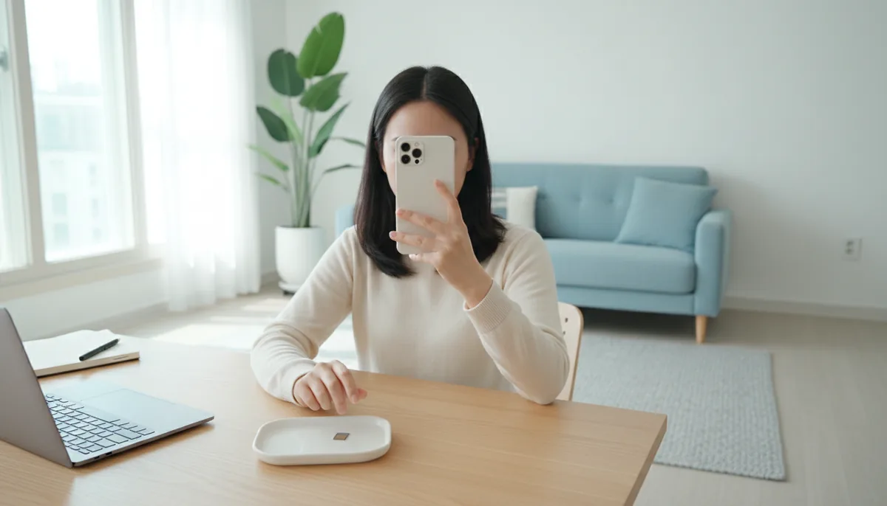

집에서 개통
본인 명의 간편인증서 하나면 신청부터 개통까지 온라인에서 끝납니다. 유심만 있으면 5분입니다.
온라인으로 개통 신청 ↗ (새 창)강원특별자치도 춘천시에서 선불폰을 개통하는 방법을 정리했습니다. 관내 온의동에 센터가 있어 방문 개통도 됩니다.
춘천시선불폰 요약
본인 명의 간편인증서 하나면 신청부터 개통까지 온라인에서 끝납니다. 유심만 있으면 5분입니다.
온라인으로 개통 신청 ↗ (새 창)춘천시 관내 온의동에 센터가 있습니다. 카카오톡으로 시간을 정하고 신분증 실물만 들고 가시면 됩니다.
카카오톡으로 예약하기 ↗ (새 창)어느 경우든 절차는 같습니다. 번호이동만 예외인데, 기존 통신사 미납이 남아 있으면 막힐 수 있어서 새 번호로 먼저 개통하시는 분이 많습니다.

유심이 있어야 시작됩니다. 못 가시면 택배·퀵 배송으로 받는 방법도 신청 화면에 있습니다.
얼굴과 신분을 확인하는 단계입니다. 2026년 10월부터는 안면인증을 반드시 통과해야 개통할 수 있습니다.
유심 정보를 넣고 개통하기를 누른 뒤 유심을 꽂고 재부팅합니다. 유심만 있으면 5분입니다.
개통이 끝나면 확인 전화가 옵니다. 받지 못하면 번호가 해지될 수 있습니다.
선불폰은 유심이 있어야 시작됩니다. 편의점에서 바로 살 수 있는데 통신망에 따라 파는 곳이 다릅니다.
편의점 세 곳 어디서나 살 수 있습니다
지하철 역 자판기에서도 팝니다
유심값은 6,600원에서 8,800원 사이입니다. 편의점과 상품에 따라 다릅니다.
LG U+망 유심은 CU와 GS25에 없습니다. LG로 개통하실 분은 이마트24나 B마트, 지하철 역 자판기를 찾으셔야 합니다.
요금제는 12,100원부터 시작합니다. 약정도 위약금도 없고 충전한 만큼 쓰는 구조입니다.
12,100원
번호만 있으면 되는 경우입니다. 홈페이지 표에는 안 올라가 있어도 실제로 파는 상품이라 상담으로 신청하실 수 있습니다.
39,600원
기본 10.3GB를 소진해도 3Mbps 속도가 남습니다. 제일 많이 나가는 요금제입니다.
46,400원
L망 5G 요금제입니다. 20GB를 쓰고 나면 3Mbps로 이어집니다.
77,000원 · 85,900원
77,000원은 11GB에 매일 2GB, 85,900원은 100GB에 소진 후 5Mbps입니다.
홈페이지에 없는 요금제도 있습니다. 많이 나가는 것만 올려둔 것이니 맞는 게 없으면 말씀해 주세요.
| 필요한 서류 | 신분증 하나. 온라인 개통은 간편인증서가 본인 명의여야 합니다 |
|---|---|
| 개통 시간 | 5분 (유심이 준비된 경우) |
| 신용 확인 | 하지 않습니다. 미납·연체·신용불량 상태도 됩니다 |
| 약정 | 없습니다. 충전한 만큼만 쓰는 방식입니다 |
| 여권 개통 | 온라인 불가. 센터에 방문하셔야 합니다 |
| 자택 개통 | 본인 명의 간편인증서가 있으면 됩니다 |
| 유심 | KT 바로유심 — CU·GS25·이마트24 LG 모두의원칩 — 이마트24·B마트·지하철 역 자판기 |
| 춘천시 센터 | 관내 1곳 — 온의동. 상세 주소는 예약하실 때 안내합니다 |
공개 범위는 시·구·동까지입니다. 상세 주소는 예약하실 때 안내합니다.
춘천시 행정구역 중심점에서 잰 직선거리입니다.
선불폰은 요금을 먼저 내고 쓰는 방식입니다. 그래서 신용을 보지 않습니다. 미납, 연체, 신용불량 상태여도 개통할 수 있습니다.
조건은 하나, 대한민국에 거주 중이면 됩니다.
선불폰이라고 새 번호만 받는 게 아닙니다. 지금 쓰는 번호를 그대로 옮겨올 수 있습니다.
다만 기존 통신사에 미납 요금이 남아 있으면 번호이동이 막힙니다. 그 경우에는 새 번호로 개통하고 미납은 따로 정리하시면 됩니다.
선불이라 충전을 해야 계속 쓸 수 있습니다. 개통할 때 고른 요금제 금액이 첫 달분입니다.
충전 방법이 익숙하지 않으면 카톡으로 물어보세요. 방문 개통하신 분은 현장에서 첫 충전까지 알려드립니다.
여권으로 신청하시는 외국인 고객은 온라인 화면에서 개통이 되지 않습니다. 센터 방문이 필요합니다.
상담은 08:00~22:00입니다. 어느 센터로 가면 되는지 먼저 물어보세요.
선불폰 온라인 개통은 본인 명의 간편인증서를 씁니다. 타인 명의로는 안 됩니다.
본인인증이 막혀서 인증용 번호가 필요하신 경우에는 12,100원 요금제로 개통하시는 분이 많습니다.
온라인 개통에서 제일 많이 막히는 지점입니다. 2026년 10월부터는 안면인증을 반드시 통과해야 개통할 수 있어서, 요령을 알고 하시는 편이 좋습니다.
빛이 화면에 반사되면 얼굴을 못 읽습니다. 형광등 아래보다 벽을 등지고 하는 게 낫습니다. 고개를 돌리라고 할 때는 시선도 같이 돌리셔야 합니다. 눈만 화면에 남겨두면 실패합니다.
몇 번 해도 안 되면 카톡으로 물어보세요. 방문 개통으로 돌릴 수도 있습니다.
이것 때문에 번호가 날아가는 경우가 실제로 있습니다. 개통 직후 며칠은 전화를 놓치지 마세요.
센터마다 운영 시간이 다릅니다. 그냥 찾아가시면 헛걸음할 수 있어서, 카카오톡으로 먼저 시간을 정하는 편이 좋습니다.
챙기실 것은 신분증 실물 하나입니다. 개통이 끝나면 첫 충전까지 알려드립니다.
유심을 이미 갖고 계시면 5분입니다. 안면인증과 본인인증, 유심 정보 입력, 요금제 선택까지가 전부입니다.
유심이 없으면 편의점에 다녀오는 시간을 더하시면 됩니다.
LG U+망 유심은 CU와 GS25에 없습니다. LG로 개통하실 분은 이마트24나 B마트, 지하철 자판기를 찾으셔야 합니다.
유심 6,600~8,800원에 요금제 12,100원부터입니다. 개통까지 5분이면 끝납니다.
제일 많이 나가는 건 39,600원 무제한입니다. 10.3GB를 다 쓰면 3Mbps로 계속 쓸 수 있어서 사실상 끊기지 않습니다.
번호만 필요하신 분, 본인인증이 막혀서 인증용 번호가 필요하신 분은 12,100원짜리를 고릅니다. 홈페이지 요금제 표에는 없지만 실제로 판매하는 상품입니다.
온의동, 모두 1곳입니다. 어느 곳으로 가실지는 카카오톡으로 정해 드립니다.
헛걸음하실 수 있습니다. 먼저 카카오톡으로 시간을 정하고 가시면 기다리지 않습니다.
편한 곳으로 가시면 됩니다. 강원 춘천시 온의동이 약 3.8km 거리에 있습니다.
온라인 개통이 되지 않아서 센터로 가셔야 합니다. 신분증 실물을 지참하시면 됩니다.
앤텔레콤 본사 해피콜입니다. 놓치면 번호가 해지될 수 있어서, 개통 신청하신 날부터 며칠은 전화를 받아주셔야 합니다.
어떤 말로 찾으셨든 이 페이지에서 끝납니다.
춘천시선불폰 개통, 지금 바로 하실 수 있습니다. 앤텔레콤 신청 페이지가 새 창으로 열립니다. 유심이 있으면 5분입니다.
상담 08:00~22:00 · 센터 방문 예약도 카카오톡으로 받습니다